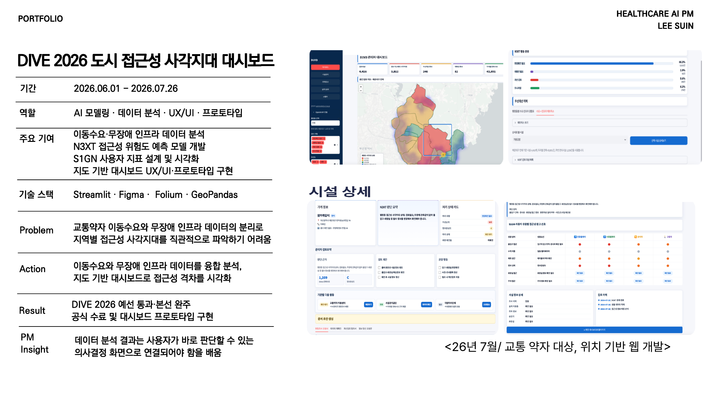

DIVE 2026 도시 접근성 사각지대 대시보드
문제
교통약자 이동수요와 무장애 인프라 데이터가 분리되어 있어 지역별 접근성 사각지대를 직관적으로 파악하기 어려웠습니다.
실행
이동수요와 인프라 데이터를 융합 분석하고, N3XT 위험도 예측 모델과 S1GN 사용자 변화 지표를 설계했습니다. 지도 기반 대시보드로 접근성 격차를 시각화하고 정책 판단 화면으로 연결했습니다.
기획 관점
분석 결과는 사용자가 바로 판단할 수 있는 의사결정 화면으로 연결되어야 합니다. 데이터의 의미, 위험도, 다음 행동이 한 화면에서 이해되어야 서비스 가치가 커집니다.
